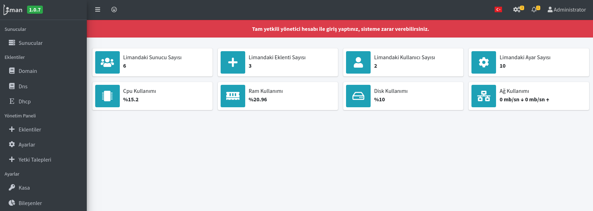

Liman Kurulum Yöntemleri
Liman MYS, her sürüm güncellemesinde otomatik olarak DEB paketi oluşturmaktadır. Doğası gereği DEB paketi farklı paketlere bağımlılık duymaktadır. Bu bağımlılıklara ulaşılabildiği sürece Liman MYS için DEB paketi, rahatlıkla kurulabilmektedir.
Mevcut durumda Liman MYS'nin güncel sürümünü barındıran Debian tabanlı sistemlerde kullanılacak şekilde AcikLab deposu bulunmaktadır. İlerleyen süreçte Market üzerinden de hem Liman MYS'nin kurulumu hem de eklenti ve modüllerinin kurulması sağlanacaktır.
1. Paket ile Kurulum
Elinizde bulunan "liman-1.0-lastest.deb" veya tam sürümün yer aldığı deb paketini daha önce kurmuş olduğunuz işletim sistemi üzerine göndermeniz gerekmektedir.
1.1. Kurulum Öncesi Adımlar
Liman MYS geliştirilmesi itibari ile Pardus işletim sistemi üzerinde kullanılmaya yönelik paketlenmiştir. Fakat Debian tabanlı sistemlerde çalıştırılmasının önünde hiçbir engel yoktur. Fakat bağımlılıklarından dolayı özellikle PHP 7.3 sürümünün bulunmasını beklemektedir.
Bazı dağıtımların resmi sitesinde PHP 7.3 paketleri bulunmamaktadır. Bu nedenle kurulum öncesinde php depolarını sisteme eklemek gerekmektedir. Php deposu eklenmesi gereken ve ekleme adımları aşağıda belirtilmiştir.
1.1.a. Ubuntu 18.04
Ubuntu 18.04 resmi depolarında PHP 7.3 paketleri olmadığı için aşağıdaki depo eklenmesi gerekmektedir:
sudo apt install software-properties-common
sudo add-apt-repository ppa:ondrej/php
sudo apt update
sudo apt install php-sqlite3 php-curl
Ubuntu 18.04 resmi depolarında PostgreSQL güncel 13.x paketleri olmadığı için aşağıdaki depo eklenmesi gerekmektedir:
sudo sh -c 'echo "deb http://apt.postgresql.org/pub/repos/apt $(lsb_release -cs)-pgdg main" > /etc/apt/sources.list.d/pgdg.list'
wget --quiet -O - https://www.postgresql.org/media/keys/ACCC4CF8.asc | sudo apt-key add -
sudo apt update
1.2. DEB paketini sunucuya gönderme
1.2.a. GNU/Linux sistemden gönderme:
Kendi bilgisayarınız GNU/Linux temelli bir bilgisayar ise temin ettiğiniz deb paketini karşı sunucu üzerine aşağıdaki komut ile SSH protokolünü kullanarak gönderebilirsiniz:
scp liman-1.0-lastest.deb sysadmin@sunucuipadresi:~/.
Bu komut kullanılırken "sysadmin" yerine sunucuya erişim sağladığınız kullanıcı adını, sunucuipadresi yerine ise kurduğunuz sunucunun IP Adresi veya DNS kaydı eklediyseniz DNS adresini yazmanız gerekmektedir.
Bu komutun çalışabilmesi için sunucunuzda openssh-server paketinin kurulu olması gerekmektedir ve varsayılanda bulunan güvenlik izinlerinin açık olması gerekmektedir.
1.2.b. Windows sistemden gönderme:
Henüz uygulanmadı. Özet olarak Winscp uygulaması ile gönderilebilmektedir.
1.3. DEB paketini kurma
DEB paketini gönderdikten sonra işletim sistemi bağımsız olarak uzaktan sunucuya erişmeniz gerekmektedir. Bunun için GNU/Linux üzerinden "SSH İstemcisi" ile bağlantı kurulabileceği gibi Windows üzerinden "Putty" ile giriş yapabilirsiniz.
Aşağıdaki komut ile SSH protokolü kullanarak giriş yapılır:
ssh sysadmin@sunucuipadresi
Sunucuya giriş yaptıktan sonra yetkili kullanıcı yine aynı kullanıcı ise aşağıdaki komut ile kurulum başlatılır. Sunucunun yetkili kullanıcı olmasının dışında ilgili cihazın herhangi bir debian tabanlı depo sunucusuna erişebiliyor olması gerekmektedir. Depo sunucusuna erişim yoksa kurumsal destek alınması önerilmektedir.
sudo apt install -y ./liman-1.0-lastest.deb
Bu kısım biraz uzun sürebilmektedir. Fakat bu adımdan sonra "Kurulum Başarıyla Tamamlandı" yazısını gördüğünüzde, kurulum işlemi tamamlanmış olacaktır.
1.4. Yönetici kullanıcısı oluşturmak
Kurulum sonrasında ilk yapılması gereken Yönetici parolası oluşturmak. Bunun için aşağıdaki komutlar ile sudo yetkili kullanıcıda iken liman kullanıcısına giriş yapılır ve yönetici hesabı oluşturulur:
sudo su liman
sudo php /liman/server/artisan administrator
Bu adım sonunda karşınıza liman web arayüzünden giriş yapacağınız kullanıcı adı ve parolanız çıkacaktır. Liman'ı kurduğunuz sunucunun ip adresini web tarayıcınız üzerine yazıp bu bilgiler ile giriş yaparsanız Liman'ın Web arayüzüne giriş yapmış olacaksınız.

2. Depo üzerinden kurulum
Liman'ı en verimli şekilde kurmanın yöntemi depo üzerinden kurulumdur. Bunun için aşağıdaki adımları uygulamak gerekmektedir.
2.1. Aciklab deposunu eklemek
Depo üzerinden Liman MYS kurmak için öncelikle Liman'ın bulunduğu AcikLab deposunu sisteminize eklemeniz gerekmektedir. Öncelikle aşağıdaki komut ile depo adresini paket kaynak listenize eklemelisiniz:
echo "deb [arch=amd64] http://depo.aciklab.org/ onyedi main" | sudo tee /etc/apt/sources.list.d/acikdepo.list
Depoyu ekledikten sonra kullanabilmek için AcikLab deposu için public.key'i sisteminize güvenilir şekilde eklemeniz gerekmektedir. Aşağıdaki komut ile açık anahtarı sisteminize ekleyebilirsiniz:
sudo wget -qO - http://depo.aciklab.org/public.key | sudo apt-key add -
2.2. Güncel Liman'ı depo üzerinden yüklemek
Bu adımdan sonra sisteminizi güncelledikten sonra liman MYS'yi yükleyebilirsiniz:
sudo apt update
sudo apt install liman
2.3. Yönetici kullanıcısı oluşturmak
Kurulum sonrasında ilk yapılması gereken Yönetici parolası oluşturmak. Bunun için aşağıdaki komutlar ile sudo yetkili kullanıcıda iken liman kullanıcısına giriş yapılır ve yönetici hesabı oluşturulur:
sudo su liman
sudo php /liman/server/artisan administrator
Bu adım sonunda karşınıza liman web arayüzünden giriş yapacağınız kullanıcı adı ve parolanız çıkacaktır. Liman'ı kurduğunuz sunucunun ip adresini web tarayıcınız üzerine yazıp bu bilgiler ile giriş yaparsanız Liman'ın Web arayüzüne giriş yapmış olacaksınız.